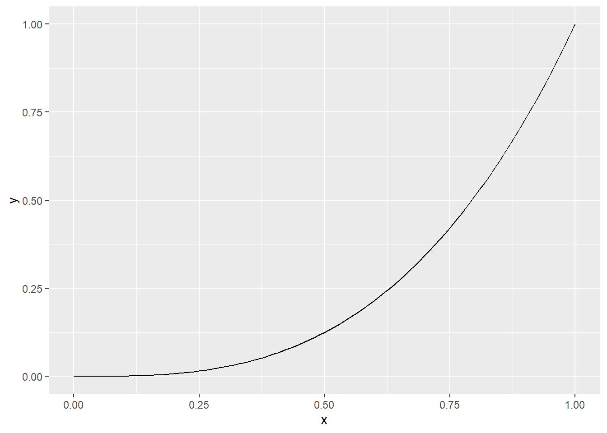
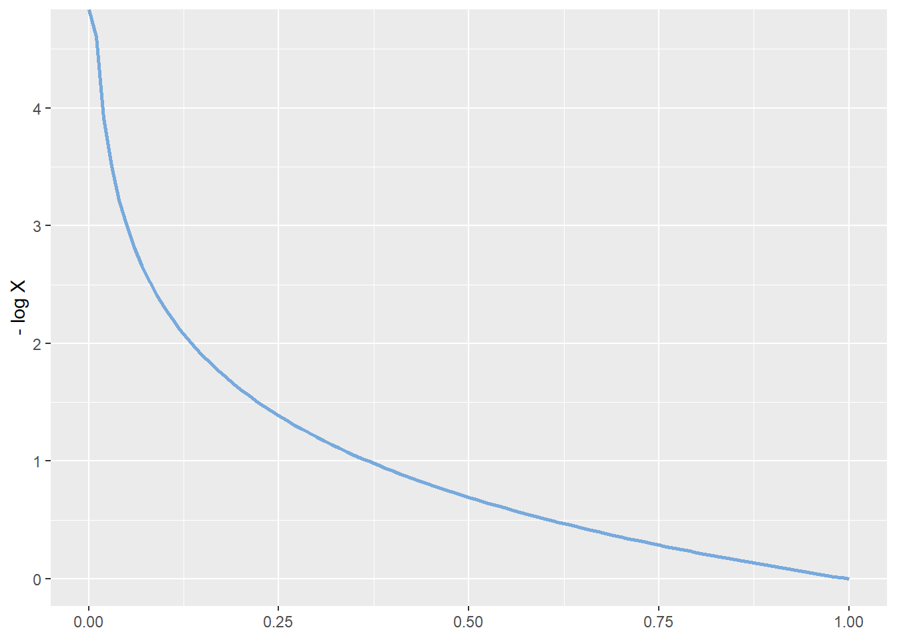
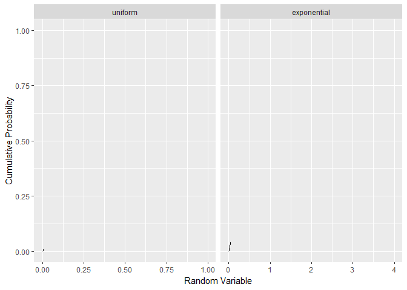

Chapter 2 Transformations and Expectations
2.1 Chapter Notes
Chapter 2 is all about the behaviour of functions of a random variable \(X\). We get a new random variable \(Y = g(X)\) and if \(g\) is nice enough we can find simple expressions for the cdf and pdf of \(Y\) in terms of \(g\) and the cdf or pdf of \(X\).
Monotonic Transformations
For example, if \(g\) is monotonic, we have the following theorem:
Theorem 2.1.3 Let \(X\) have cdf \(F_X(x)\), let \(Y=g(X)\), and define the support sets of \(X\) and \(Y\) as follows:
\[ \begin{aligned} \mathcal{X} &= \{x: f_X(x) >0\}\\ \mathcal{Y} &= \{y: y=g(x) \text{ for some } x \in X\ \} \end{aligned} \]
Then:
- If \(g\) is an increasing function on \(\mathcal{X}\), \(F_Y(y) = F_X(g^{-1}(y))\) for \(y \in \mathcal{Y}\)
- If \(g\) is a decreasing function on \(\mathcal{X}\) and \(X\) is a continuous random variable, \(F_Y(y) = 1 -F_X(g^{-1}(y))\) for \(y \in \mathcal{Y}\).
Because \(g(x)\) is monotone it is both one-to-one and onto from \(\mathcal{X} \to \mathcal{Y}\). So \(g^{-1}(x)\) is well-defined.
For example, here is the cdf of the uniform(0,1) distribution:
ggplot()+
geom_function(fun=punif, args = list(min = 0, max = 1),
colour=tol_light[[4]], lwd=1)+
xlim(0,1)+
ylab("Cumulative Probability")
It’s just \(F_X(x) = x\). And we want to use the transformation \(Y = g(X) = -\log X\) which is decreasing over the support of \(X\), \((0,1)\):
ggplot()+
geom_function(fun=function(x){-log(x)},colour=tol_light[[3]], lwd=1)+
xlim(0,1)+
ylab("- log X")
As \(X\) ranges from 0 to 1, \(Y\) ranges from 0 to \(\infty\).
By Theorem 2.1.3,
\[ F_Y(y) = 1 -F_X(g^{-1}(y)) = 1 - F_X(e^{-y}) = 1 - e^{-y} \]
This is the cdf of the exponential distribution with rate parameter 1. I’ve plotted the cdfs of the uniform and exponential below.I’ve only plotted the range \((0,4)\) for the exponential.
# not convinced of the utility of this animation - particularly the timing on each side
# since the exponential should really be ranging from 0 - infinity.
data_exp <- tibble(count = 1:1001,
uniform=seq(0,1,length.out=1001),
exponential=seq(0,4,length.out=1001))%>%
pivot_longer(c(uniform,exponential),names_to="variable",values_to="seq")%>%
mutate(cdf=if_else(variable == "uniform", seq,1-exp(-seq)))
anim_exp <-
ggplot(data_exp, aes(seq,cdf,group=variable))+
geom_line()+
facet_grid(cols = vars(fct_rev(variable)), scales = "free")+
xlab("Random Variable")+
ylab("Cumulative Probability")+
transition_reveal(count) # problem to fix: colour and line width specification doesn't work
animate(anim_exp,end_pause = 50)
We won’t always be dealing with transformations that are monotonic over the entire support set, however we usually can partition \(\mathcal X\) into intervals such that \(g\) is monotonic over each interval, and build the cdf of \(Y\) this way.
Generating Random Samples
The chapter introduces a method of generating random samples from a distribution. We will need the following theorem:
Theorem 2.1.10 - Probability Integral Transformation
Let \(X\) have continuous cdf \(F_X(x)\) and define the random variable \(Y\) as \(Y=F_X(x).\) Then \(Y\) is uniformly distributed on \((0,1),\) that is \(P(Y \leq y)=y\) for \(0<y<1\).
There is a bit of subtlety here around defining inverse cdfs in cases where the cdf is not strictly increasing, but stays level over some range. In these cases we define
\[ F_x^{-1}(y) = \inf\{x: F_X(X)=y\} \]
Aside from this, it is fairly straightforward to show that \(P(Y \leq y)=y\).
Now, if we can generate random samples from uniform\((0,1)\), we can create observations from a population with cdf \(F_X(x)\) and solve \(F_X(x)=u\).
Moment Generating Functions
The chapter introduces expectations, and then moments. For each integer \(n\), the \(n\)th moment of \(X\), \(\mu'_n\), is
\[ \mu'_n = E(X^n) \] The \(n\)th central moment of \(X\), \(\mu_n\), is
\[ \mu_n = E((X-\mu)^n) \] where \(\mu = \mu'_1=E(X)\).
The second central moment is the variance.
The chapter introduces moment generating functions, saying that often it is easier to calculate the moments directly, but mgfs are still useful for characterising distributions (see Theorem 2.3.12).
For a random variable \(X\) with cdf \(F_X(x)\), the mgf is
\[ M_X(t)=E(e^{tX}). \] We generate moments from this functions as follows:
Theorem 2.3.7 If \(X\) has mgf \(M_X(t)\) then
\[ E(X^n)=M_X^{(n)}(0)=\frac{d^n}{dt^n}M_X(t)\vert_{t=0} \]
Convergence (in a neighbourhood of 0) of mgfs to an mgf implies convergence of cdfs:
Theorem 2.3.12 - Convergence of mgfs
Suppose \(\{X_i, i=1,2,\dots\}\) is a sequence of random variables, each with mgf \(M_{X_i}(t).\) And suppose that
\[ \begin{aligned} \lim_{i\to\infty} M_{X_i}(t) = M_X(t),&& \text{for all } t \text{ in a neighbourhood of 0} \end{aligned} \]
and \(M_X(t)\) is an mgf. There there exists a unique cdf \(F_X(x)\) whose moments are determined by \(M_X(t)\) and, for all \(x\) where \(F_X(x)\) is continuous, we have
\[ \lim_{i\to\infty} F_{X_i}(x) = F_X(x). \]
As a example, the chapter goes on to show that mgfs of the binomial\((n,p)\) distribution converge to the mgf of the Poisson(\(\lambda\)) distribution. When we consider \(p=\lambda/n\) and let \(n\to \infty\).
This is a common approximation, usually advised when \(n\) is large and \(np\) is small, and Theorem 2.3.12 explains its use.
Here’s an example with \(n=15\) and \(p=0.3\):
n=15
p=0.3
data_pois <- tibble(x=0:n,
Binomial=dbinom(x,n,p),
Poisson=dpois(x,lambda=n*p))%>%
pivot_longer(c(Binomial,Poisson),names_to = "Distribution",values_to = "pmf")
ggplot(data_pois, aes(x=x,y=pmf,group=Distribution))+
geom_col(aes(fill=Distribution),position = "dodge")+
ylab("Probability Mass")+
scale_x_continuous(breaks=0:15)
This might be interesting as a Shiny app.
To show convergence to the mgf of the Poisson, we need the following lemma.
Lemma 2.3.14
Let \(a_1, a_2, \dots\) be a sequence of numbers converging to \(a\), that is \(\lim_{n \to\infty} =a\). Then
\[ \lim_{n \to\infty} \left( 1 + \frac{a_n}{n} \right)^n = e^a \]
In the binomial/Poisson example, we have:
\[ \begin{aligned} M_X(t) &= [pe^t + (1-p)]^n &&\text{mgf for distribution Binomial}(n,p) \\ &=[1+ \frac{1}{n}(e^t -1)(np)]^n && \text{rearranging}\\ &= [1+ \frac{1}{n}(e^t -1)\lambda]^n. \end{aligned} \]
Now we set \(a_n = a = (e^t-1)\lambda\) and use the Lemma to get
\[ \begin{aligned} \lim_{n\to \infty} M_X(t) &= e^{\lambda(e^t-1)}\\ &=M_Y(t) &&\text{i.e. the mgf of distribution Poisson}(\lambda) \end{aligned} \]
Differentiating Under an Integral Sign
The chapter takes a brief dip into calculus, noting that the scenario where we want to reverse the order of integration and differentiation comes up fairly often in theoretical statistics. Leibniz’s Rule (an application of the Fundamental Theorem of Calculus and the chain rule) is introduced;
Theorem 2.4.1 - Leibniz’s Rule
If \(f(x,\theta)\), \(a(\theta)\), and \(b(\theta)\) are differentiable with respect to \(\theta\) then.
\[ \frac{d}{d\theta}\int^{b(\theta)}_{a(\theta)} f(x,\theta) dx = f(b(\theta),\theta)\frac{d}{d\theta}b(\theta) - f(a(\theta),\theta)\frac{d}{d\theta}a(\theta) + \int^{b(\theta)}_{a(\theta)} \frac{\partial}{\partial\theta} f(x,\theta) dx \] If \(a\) and \(b\) are constants the first two terms of the RHS disappear.
So we can differentiate the integral with no problem if we have the integral of a differentiable function over a finite range. Problems can arise with infinite range.
The chapter points out that the question of reversing the order of differentiation and integration is a question about reversing the order of limits and integration, since a derivative is a limit. Some important results presented in the chapter follow from Lesbesgue’s Dominated Convergence Theorem:
Theorem 2.4.2 - Lesbesgue’s Dominated Convergence Theorem
Suppose function \(h(x,y)\) is continuous at \(y_0\) for each \(x\), and there exists a function \(g(x)\) satisfying
- \(|h(x,y)|\leq g(x)\) for all \(x\) and \(y\),
- \(\int^\infty_{-\infty} g(x) < \infty\)
Then
\[ \lim_{y\to y_0}\int^\infty_{-\infty} h(x,y)dx = \int^\infty_{-\infty} \lim_{y\to y_0} h(x,y) dx \]
Bounding \(h\) by a function \(g\) with a finite limit ensures that the integral can’t behave too badly.
2.2 Questions
Ex 2.1
Question
In each of the following find the pdf of \(Y\). Show that the pdf integrates to 1.
\(Y = X^3\) and \(f_X(x) = 42x^5(1-x)\), \(0 < x < 1\)
\(Y = 4X +3\) and \(f_X(x) = 7e^{-7x}\), \(0 < x < \infty\)
\(Y = X^2\) and \(f_X(x) = 30x^2(1-x)^2\), \(0 < x < 1\)
Answer
Will need Theorem 2.1.5 on page 51/77.
Our transformation \(Y=X^3\) is monotone on \(0 < x < 1\)
and so by Theorem 2.1.5 our pdf is:
\[ \begin{aligned} f_Y(y) &= f_X(y^{1/3}) |\frac{d}{dy}y^{1/3}| \\ & = 42(y^{1/3})^5(1-y^{1/3})\frac{1}{3}y^{\left(-2/3\right)}\\ &= \end{aligned} \]
Ex 2.3
Question
Suppose \(X\) has the geometric pmf \(f_X(x) = \frac{1}{3}(\frac{2}{3})^x\), \(x = 0, 1, 2, \dots\). Determine the probability distribution of \(Y = X/(X + 1)\). Note that here both \(X\) and \(Y\) are discrete random variables. To specify the probability distribution of \(Y\), specify its pmf.
Answer
Ex 2.6
Question
In each of the following find the pdf of \(Y\) and show that the pdf integrates to 1.
\(f_X(x) = \frac{1}{2}e^{-|x|}\), \(-\infty < x < \infty\); \(Y = |X|^3\)
\(f_X(x) = \frac{3}{8} (x+1)^2\), \(-1 < x < 1\); \(Y = 1-X^2\)
\(f_X(x) = \frac{1}{2} (x+1)^2\), \(-1 < x < 1\); \(Y = 1-X^2\) if \(X\leq 0\) and \(Y=1-X\) if \(X>0\)
Answer